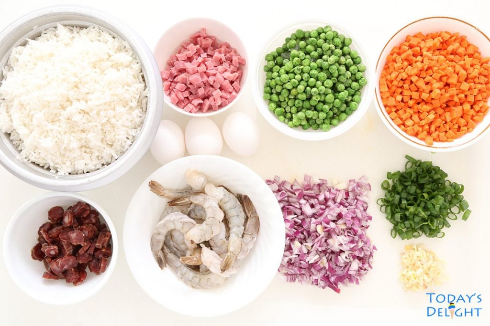

Chinese Food Recipe
Home
Biryani
Pilau
Rice with Beans
How to Cook Chinese Food
Details on how to cook Chinese Food...
Ingredients:
1 cup broccoli florets
1 cup bell pepper, sliced
1 cup snap peas or green beans
2 tablespoons soy sauce
1 tablespoon vegetable oil
1 garlic clove, minced
1 tablespoon ginger, minced
1 teaspoon sugar
1 teaspoon cornstarch mixed with 1 tablespoon water (for thickening)

Instructions:
Heat oil in a wok or large skillet over medium-high heat
Add garlic and ginger, and stir-fry for about 30 seconds
Add broccoli, bell pepper, and snap peas/green beans. Stir-fry for 3-5 minutes until tender-crisp
Stir in soy sauce and sugar
If desired, add the cornstarch slurry and cook until the sauce thickens
Serve hot